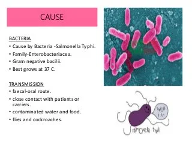

Typhoid
Typhoid is a bacterial infection that can lead to a high fever, diarrhea, and vomiting. It can be fatal. It is caused by the bacteria Salmonella typhi. The infection is often passed on through contaminated food and drinking water, and it is more prevalent in places where handwashing is less frequent.
Causes of Typhoid
People who drink contaminated water or eat food washed in contaminated water can develop typhoid fever. Other ways typhoid fever can be contracted include: using a toilet contaminated with bacteria and touching your mouth before washing your hands. eating seafood from a water source contaminated by infected poo or pee.

Symptoms of Typhoid
Signs and symptoms are likely to develop gradually — often appearing one to three weeks after exposure to the disease.
Early illness
Signs and symptoms include:
Fever that starts low and increases daily, possibly reaching as high as 104.9 F (40.5 C)
Headache
Weakness and fatigue
Muscle aches
Sweating
Dry cough
Loss of appetite and weight loss
Stomach pain
Diarrhea or constipation
Rash
Extremely swollen stomach
Later illness
Without treatment, you may:
Become delirious
Lie motionless and exhausted with your eyes half-closed in what's known as the typhoid state
Life-threatening complications often develop at this time.
In some people, signs and symptoms may return up to two weeks after the fever has subsided.
Medicines for Typhoid
Antibiotic therapy is the only effective treatment for typhoid fever.
Commonly prescribed antibiotics
Ciprofloxacin (Cipro). In the United States, doctors often prescribe this for adults who aren't pregnant.
Azithromycin (Zithromax).
Ceftriaxone.
Take the above mentioned medicines on Doctor's Prescription
Stratergies to prevent Typhoid Fever
Water, sanitation and hygiene (WASH)
WASH strategies were initiated in 1990 as Sustainable Development Goals (SDG goal 6)23. Data from the UNICEF regarding the WASH status in India show that basic water availability has increased from 80 per cent in 2000 to 88 per cent in 2015. Basic sanitation availability was 38 per cent in 201423. However, since its initiation (in 2014), Swachh Bharat Mission has helped to improve the situation so as to achieve 95 per cent coverage by 201924. Handwashing facilities are available to only 87.5 per cent of the population. Further, significant inequalities persist between urban and rural areas of the country24.
While proper WASH practices including improved access to clean water and sanitation are the mainstays of typhoid control as in any diarrhoeal diseases, these require long-standing investments, huge financial outlays as well as sustained political commitment. Most policymakers in developing countries resort to a comprehensive approach that includes immunization, thus combining a short-term measure with long-term solutions.